aNZac Build is a collection of third party Kodi media player add-ons that search the Internet and provide links to on-line content that is publicly available.
aNZac Build is not responsible for the content streamed to your device and neither does it condone piracy so you must satisfy yourself that either you or the sites accessed for streaming have the copyright agreements in place and are entitled to access this content.
aNZac Build does not host or upload any video, films, media file, live streams (avi, mov, flv, mpg, mpeg, divx, dvd rip, mp3, mp4, torrent, ipod, psp).
aNZac Build is not responsible for the accuracy, compliance, copyright, legality, decency, or any other aspect of the content streamed to or from your device. If you have any legal issues please contact the appropriate media file owners or host sites.
aNZac Build has no control over the links on any site that it provides a link to. If you see any form of infringements, please contact the appropriate media file owners or host sites immediately.
This guide will show you how to manage IPTV Channels (Playlists) and Program Guides (EPGs).
The IPTV / Radio interface is accessed by Clicking OK twice on either 'Live IPTV' or 'Radio N Music'. The free IPTV Options
available are IPTV AU (Australian FreeView), IPTV NZ (New Zealand FreeView), Pluto TV
(about 300 channels) and STIRR (about 100 channels) as well as RADIO AU (Australian Radio) and
RADIO NZ (New Zealand Radio).
See Add IPTV Subscription for the list of available compatible IPTV subscription add-ons.
Note: Some IPTV channels are Geo-blocked and cant be accessed from some locations without a VPN. No EPGs (Program Guides) available for radio add-ons.
IPTV Merge (The Live IPTV manager)
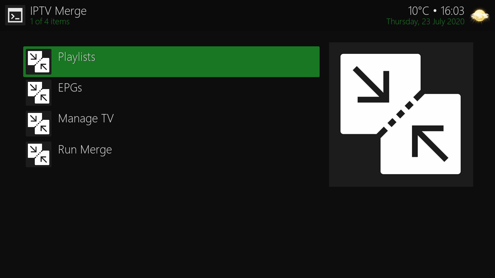
The IPTV Merge menu consists of four options. Playlists (add and remove TV and radio channel lists), EPGs
(add and remove TV program guide lists), Manage TV (manage individual TV channels) and Run Merge
(manually start update of Playlist and EPG info).
Playlists and EPGs (IPTV / Radio channel and guide lists)
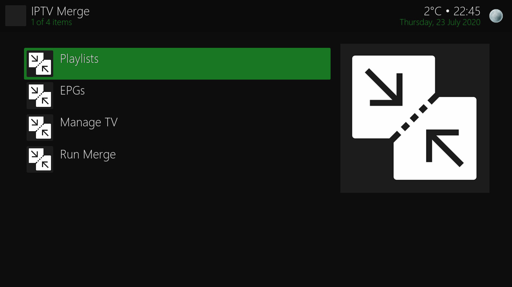
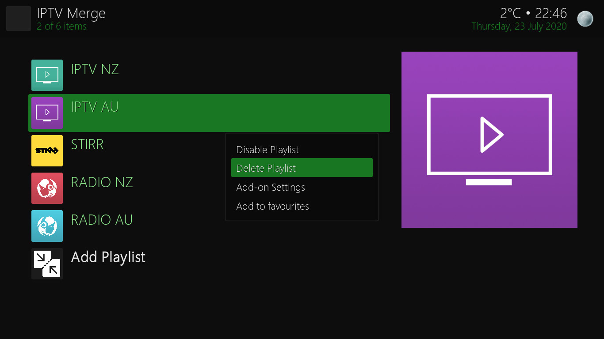
To Disable / Delete an EPG or Playlist navigate to 'Playlists' and press OK. (pictured left)
Now navigate to the Playlist / EPG you wish to Disable / Delete and long press OK to open the menu (pictured right) and
press OK on the desired option. These options are the same for both Playlists and EPGs. (Tip: you should keep both lists synced)
Add a Playlist and / or EPG (IPTV / Radio channel and guide lists)
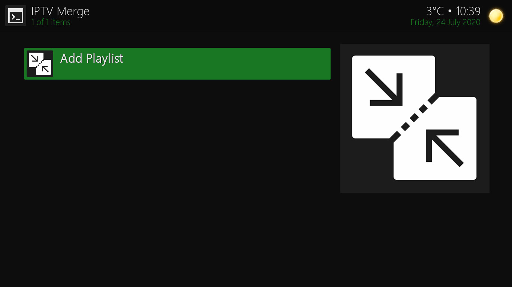
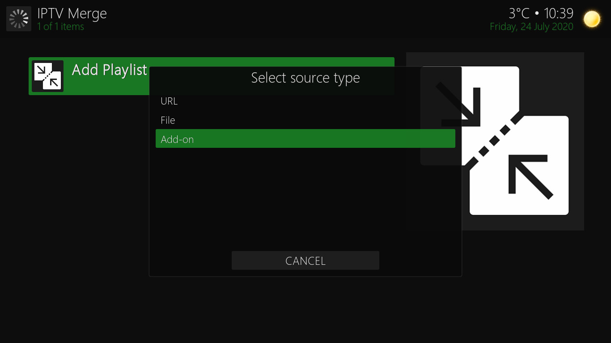
In this example we will add the IPTV NZ (New Zealand FreeView) Playlist and EPG. The process should be repeated for all the playlists and epgs
you want to add. (remember there are no EPGs for Radio add-ons)
1 Navigate to Add Playlist and press OK. (pictured left)
2 Navigate DOWN to Add-on and press OK. (pictured right)
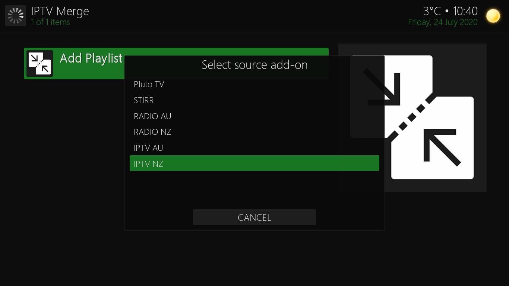
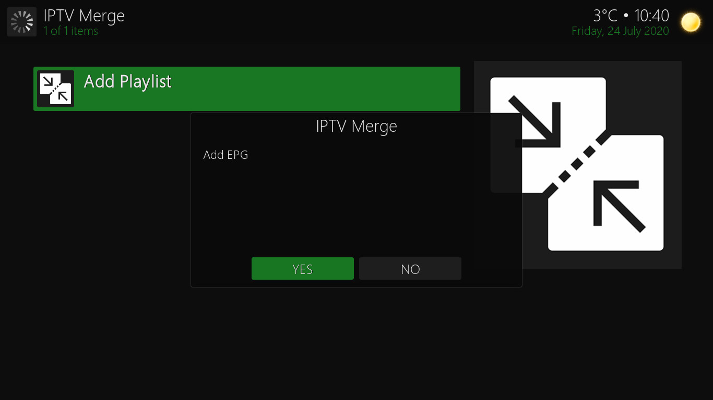
3 Navigate DOWN to the Add-on you wish to add (IPTV NZ in this example) and press OK. (pictured left)
4 Navigate LEFT to 'YES' and press OK if you want to add EPG (guide) information or press OK on 'NO' if not. (pictured right)
If adding EPG information for the playlist repeat steps 2 and 3 above. If not you are done so press BACK.
Manage TV (Hide individual channels within Playlists)
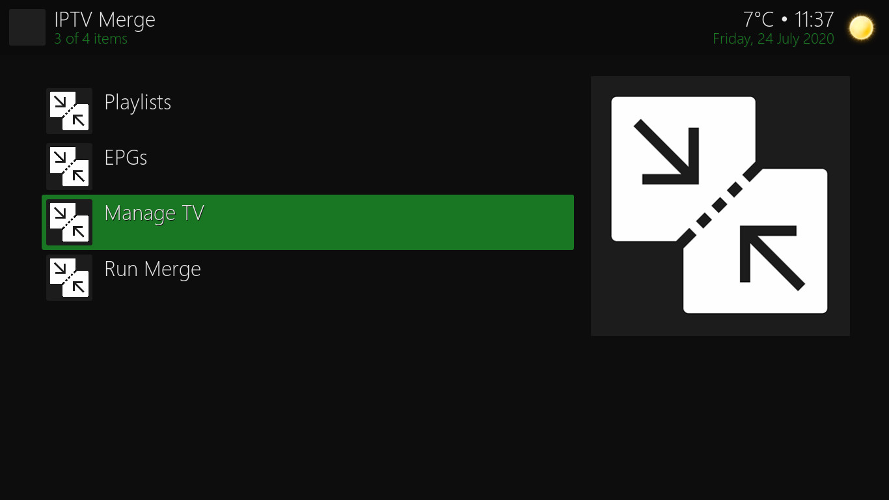
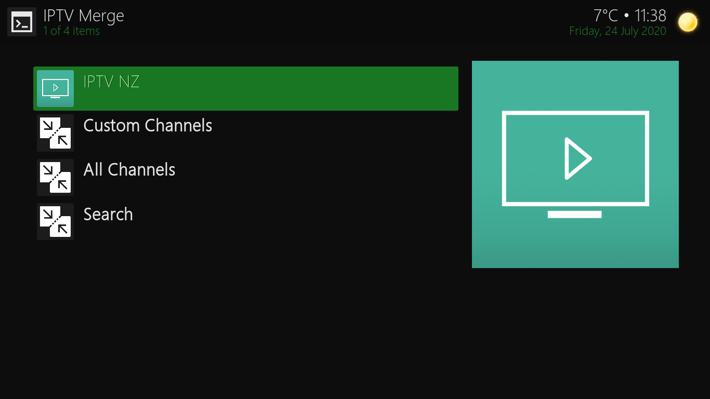
To manage individual channels first navigate to 'Manage TV' and press OK. (pictured left)
Now navigate to the Playlist you wish to manage and press OK. (pictured right)
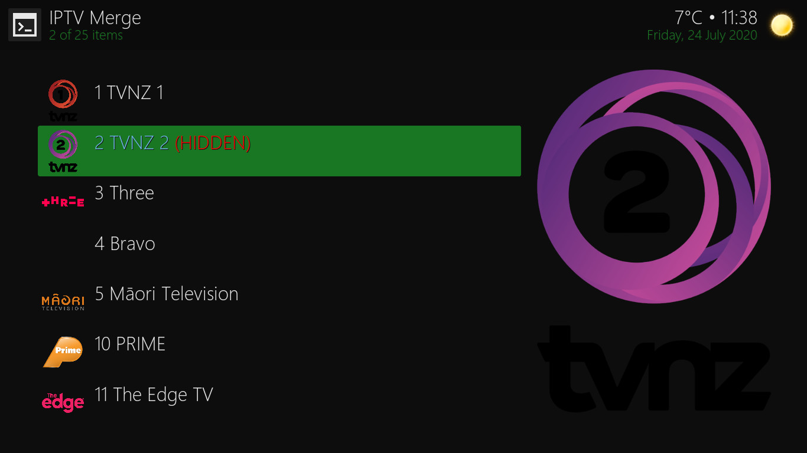
Now navigate to the channel you wish to hide / show and press OK to toggle visibility. (pictured left)
Press BACK once to manage a different playlist or press BACK twice to return to the main IPTV Merge menu.
Run Merge (Manually start a Playlist and EPG update)
Once you have changed your IPTV and Radio playlists (channels) and EPGs (program guides) you need to run a Merge (Update)
to refresh the channel links and guide information.
Tip: The system runs a merge automatically from time to time but if channels are not working you can start the
merge to update them
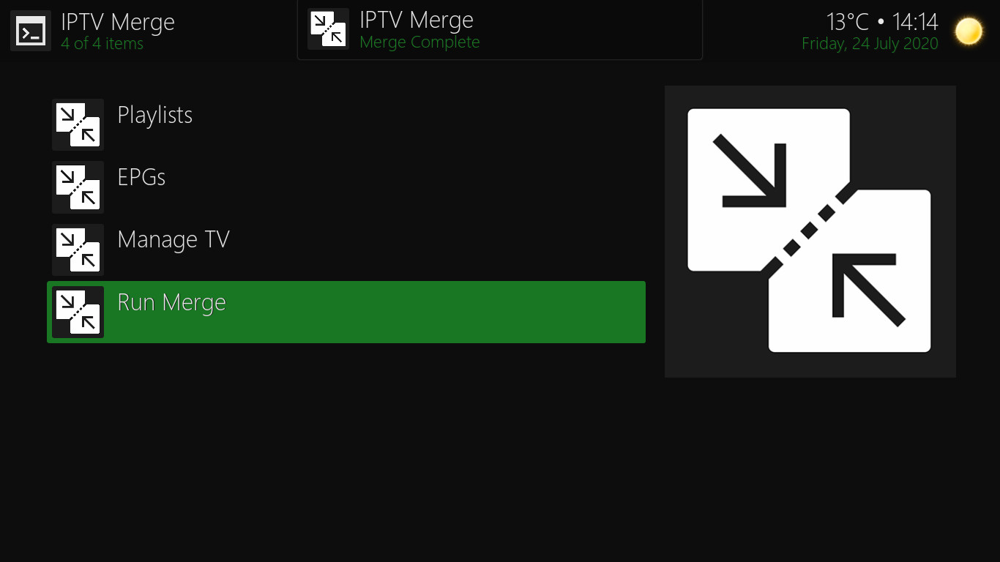
To Start a Merge (update) navigate to 'Run Merge' and press OK. (pictured above)
A message will now be displayed 'Merge Started' (pictured left)
after a while another message will be displayed 'Merge Complete' (pictured right)
Now the channel and guide information will reload and you are done. Press BACK to return to the main menu